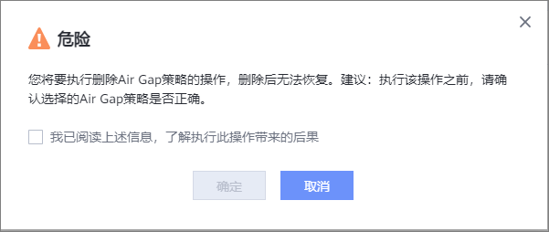
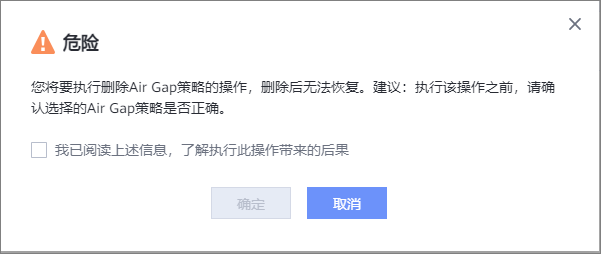

如果您不再使用某个Air Gap策略，请参考本节操作，删除Air Gap策略。
注意事项
已关联存储设备的Air Gap策略不支持删除。
操作步骤
- 选择“数据安全 > Air Gap”。

对于1.5.0版本，请选择“数据利用 > Air Gap”。
- 选择“Air Gap策略”页签。
- 在需要移除的Air Gap策略所在行，选择。
- 系统弹出提示框，确认信息无误后，单击“确定”。

如果您不再使用某个Air Gap策略，请参考本节操作，删除Air Gap策略。
已关联存储设备的Air Gap策略不支持删除。
对于1.5.0版本，请选择“数据利用 > Air Gap”。
